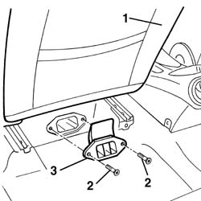

5010C44 air diffuser to rear seat - r+r
- Path
- Procedures > 50 AUXILIARY UNITS > 5010 CLIMATE CONTROL - MISCELLANEOUS > 5010C air outlet and diffusers > 5010C44 air diffuser to rear seat - r+r
- Kind
- repair procedure (removal / refitting; the operation number is the code)
- Applies to
- all engines; all production periods
- Interactive page
- https://sloeber94.github.io/elrnDB-a156/en/#/3238261
Applies to: all engines; all production periods
 Removing
Removing
 Refitting
Refitting1. Advance completly the anterior seat
2. Loosen the screws
3. Remove the diffusor

Applies to: all engines; all production periods
Refitting
RemovingVerify that the diffusor has no damage
Place the diffusor
Tighten the screws
Replace the antirior seat in its psuitable seat
Vertify that the 'air flow reach the diffusor correctly
Topics that link to this page (10)
- 5010B47 side air duct to rear seat(one), lh or rh - r r
- 5505C41 cabin wiring - r r
- 5580C86 side bag wiring harness (one) lh or rh - r r or replace
- 7015B44 tail gate catch control cable - r+r
- 7015B48 Tailgate OPENING CONTROL - R.R.
- 7025B30 boot lid open control - r+r
- 7025B32 boot lid catch cable - r+r
- 7025C32 fuel filler flap catch control - r+r
- 7040L10 cabin floor carpet - r r
- 7065A80 pre-tensioner wiring - r r